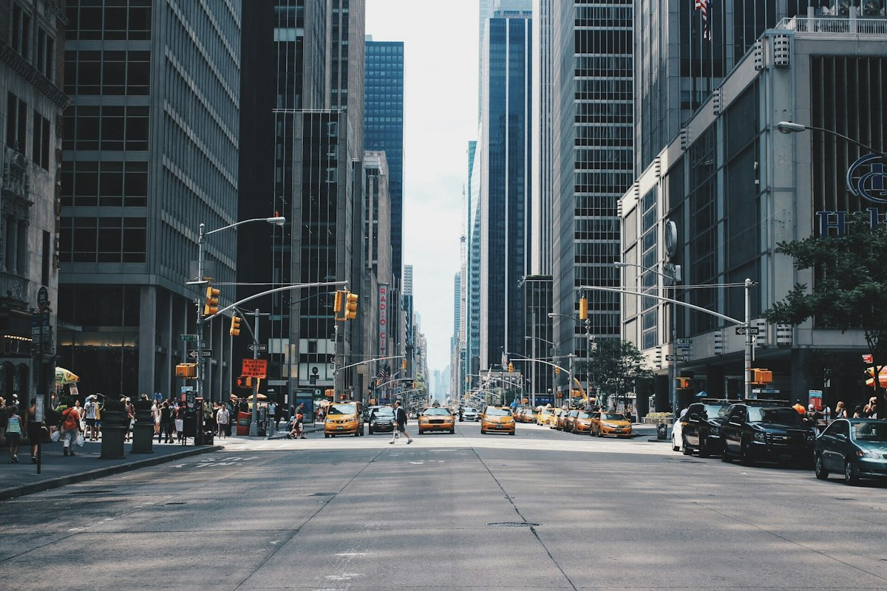
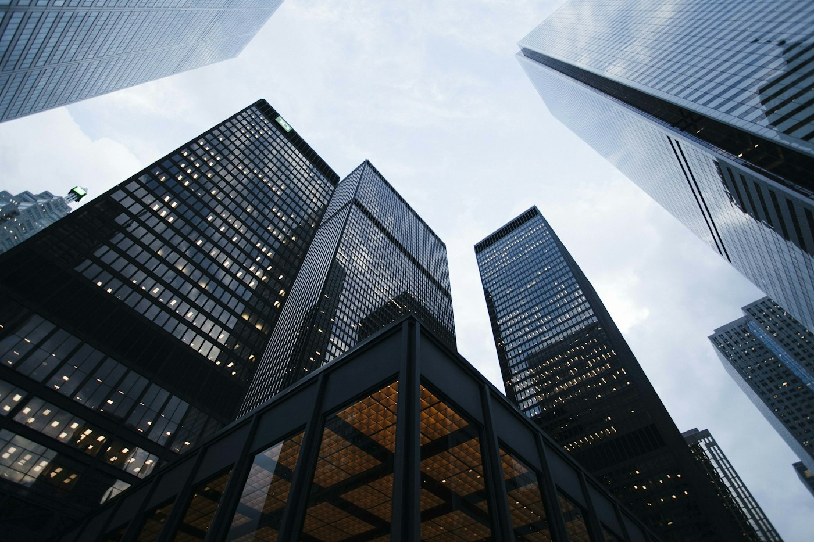
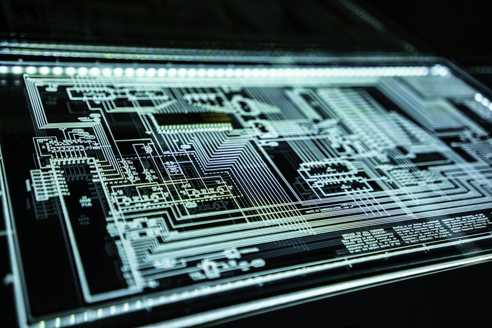
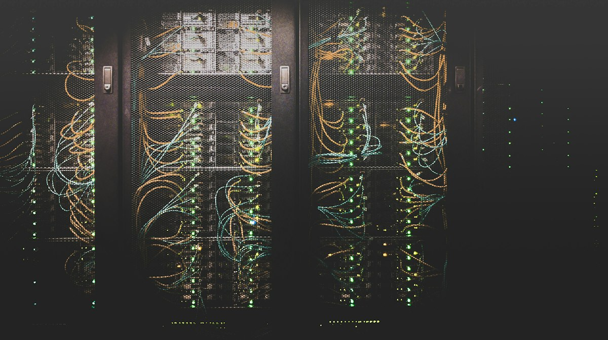
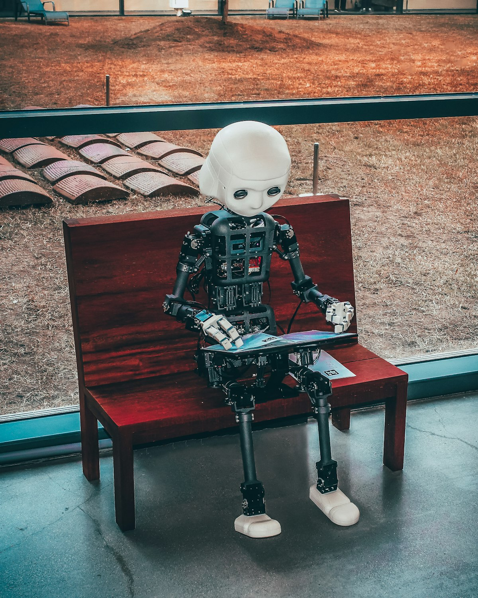
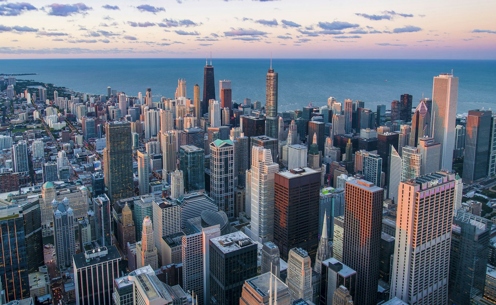

1994
The first line of code
Joins a Boston software start-up as a junior engineer, learning how great products are built — and how easily they fail.
From a junior engineer’s first commit to a company of 62,000 people — the milestones, the honours and the boards that shaped the path.
Years in
enterprise technology
Companies acquired
and integrated
Countries where
Nexora operates
Professionals reskilled
through Nexora Academy
Scroll to move through the years, or jump straight to one from the rail below.
Keep scrollingJoins a Boston software start-up as a junior engineer, learning how great products are built — and how easily they fail.
Promoted to engineering lead at twenty-nine, running a team of twelve on a core-banking platform used in six countries.
Starts the company from a rented garage with three engineers and one whiteboard. The first platform ships within eleven months.

Opens in London to serve two European banks — the start of a deliberate strategy of local teams, not distant outsourcing.

Nexora lists publicly and opens delivery centres in Bengaluru, Singapore and Frankfurt. Headcount grows from 400 to 12,000 in five years.

Acquires Sentinel Labs, a threat-intelligence firm, and builds the zero-trust practice that now protects thousands of enterprises.

A sovereign, carbon-aware cloud platform becomes the fastest-growing business in the company’s history.
Commits Nexora to net-zero emissions by 2035 and to running all data centres on renewable power by 2030.

Commits $1 billion to responsible AI research and launches the Aether platform, with an independent ethics board.
Record revenue, record customer satisfaction and the most diverse leadership team in Nexora’s history.

San Francisco · Nexora headquartersRecognition for leadership, innovation and responsible business — on behalf of everyone at Nexora.
Giving back to the industry and the institutions that shaped it.